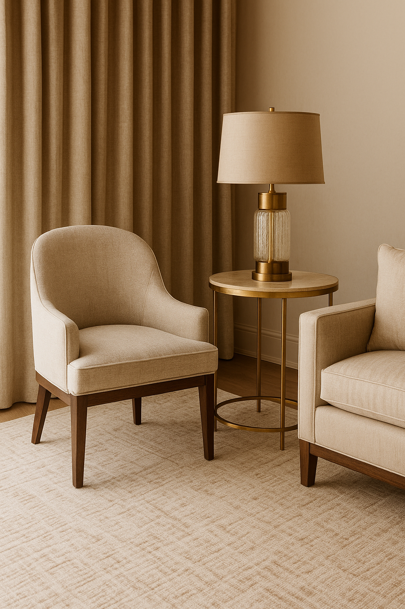
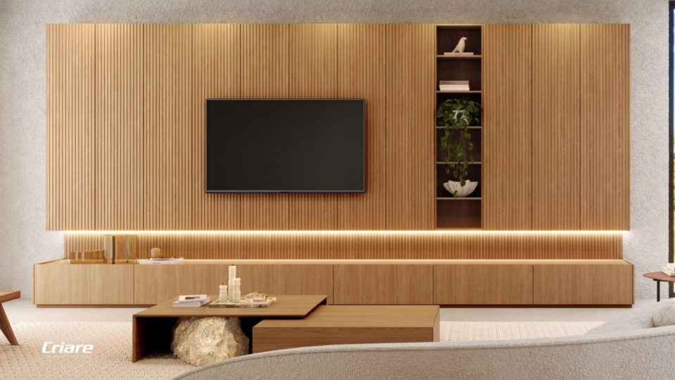
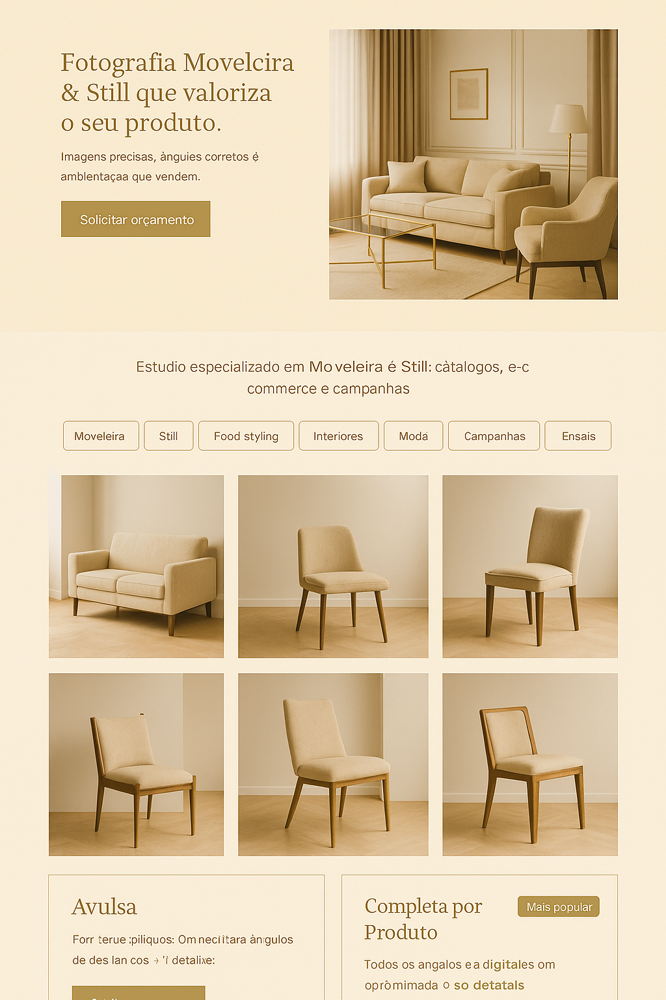

Leitura recomendada
Veja a página principal para entender quando a ambientação digital faz sentido.
Na nova estrutura, o CGI entra como apoio para ampliar coleções, criar contexto visual e manter consistência entre produtos e materiais comerciais.
Página complementar
A ambientação digital continua disponível, mas agora aparece como recurso complementar dentro da estrutura principal de Fotografia Moveleira e Soluções para Produtos.
Leitura recomendada
Na nova estrutura, o CGI entra como apoio para ampliar coleções, criar contexto visual e manter consistência entre produtos e materiais comerciais.
Como complementa a oferta
A ambientação digital ajuda quando o produto precisa de contexto, ambientação consistente e escalabilidade para catálogos, campanhas ou apresentação comercial.


